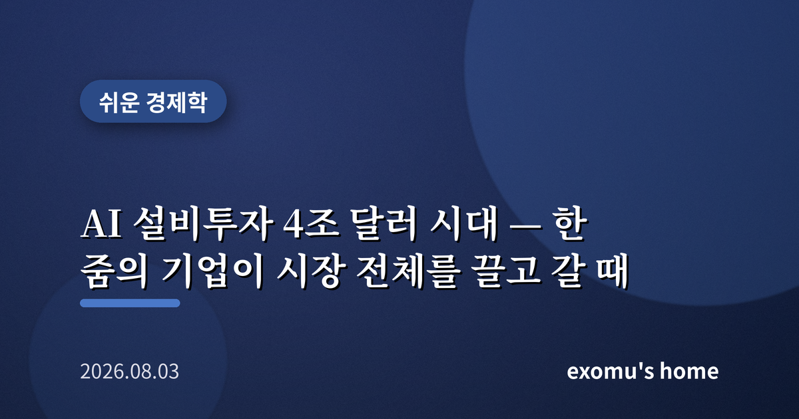
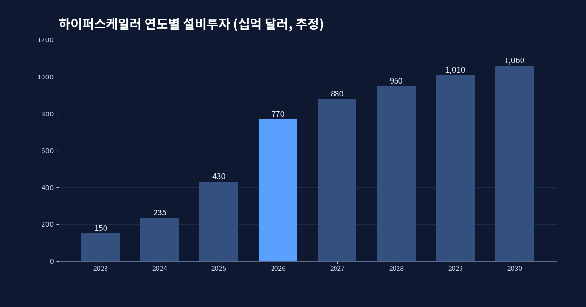
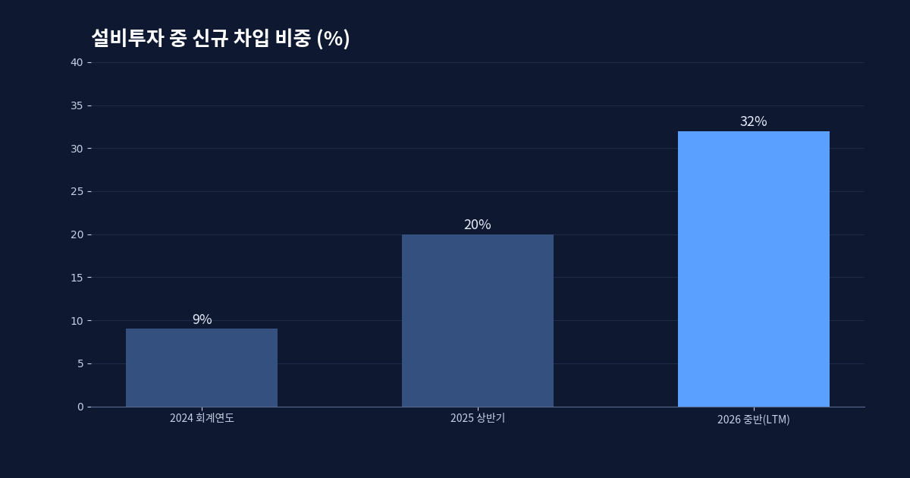
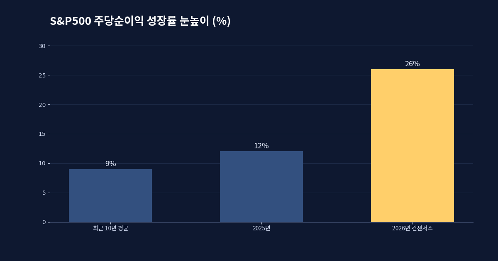
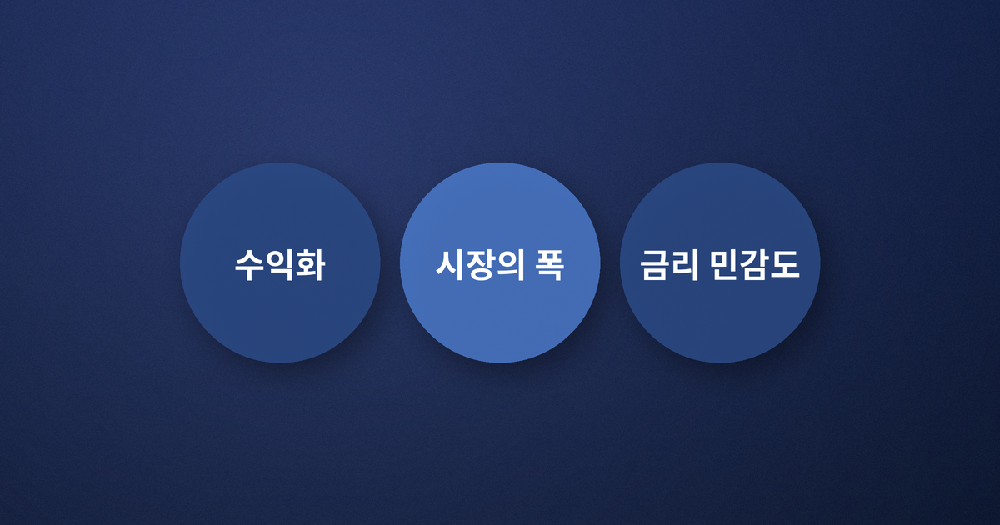

AI 설비투자 4조 달러 시대 — 한 줌의 기업이 시장 전체를 끌고 갈 때

숫자 하나로 시작해 보자
올해 전 세계에서 가장 많은 돈을 쓰고 있는 주체가 어디냐고 묻는다면, 답은 어느 정부도 아니고 산유국도 아니다. 이른바 하이퍼스케일러라 불리는 소수의 미국 빅테크다. 시장 컨센서스는 이들 아홉 곳 안팎의 기업이 2026년 한 해에만 약 7,700억 달러를 설비투자에 쏟아붓는다고 본다. 이 금액은 놀랍게도 그들이 한 해 영업으로 벌어들이는 현금흐름과 거의 맞먹는 규모다. 번 돈을 거의 전부 데이터센터와 반도체, 전력 설비에 다시 밀어 넣고 있다는 뜻이다.
시야를 조금 더 넓히면 그림은 더 아득해진다. 여러 기관은 이 소수 기업이 2026년부터 2030년까지 5년간 누적 4조 달러가 넘는 돈을 AI 인프라에 투입할 것으로 추산한다. 참고로 2025년 미국의 비금융 기업 전체가 쓴 설비투자가 3조 달러 남짓이었다. 한 줌의 회사가, 한 나라 산업 전체가 쓰던 돈보다 더 많은 돈을, 그것도 인공지능이라는 단일한 방향으로 쏟아붓고 있는 셈이다.

이것이 왜 유동성의 문제인가
이 거대한 지출은 단순히 몇몇 기업의 야심으로 끝나지 않는다. 돈이 어디로 흐르느냐가 곧 자산가격의 지도를 다시 그리기 때문이다. 반도체와 전력, 냉각 설비, 부동산으로 자금이 몰리면 관련 기업의 매출과 주가가 오르고, 그 기대가 다시 지수 전체를 끌어올린다. 실제로 미국 대표지수의 이익 성장 대부분이 이 소수 기업에서 나온다. 시장은 지금 'AI 설비투자가 언젠가 그만큼의 이익으로 돌아온다'는 하나의 약속에 크게 기대어 서 있다.
문제는 자금 조달 방식이 조금씩 달라지고 있다는 점이다. 한동안은 넉넉한 현금으로 감당했지만, 설비투자가 벌어들이는 현금을 넘어서기 시작하면서 빚과 증자가 다시 등장했다. 설비투자에서 신규 차입이 차지하는 비중은 1년여 만에 한 자릿수에서 30%대로 뛰었고, 대형 기업들이 수백억 달러 규모의 채권과 주식을 잇달아 찍어냈다. 번 돈만으로는 이 속도를 감당하기 어려워졌다는 신호다.

집중이라는 이름의 취약점
가장 눈여겨볼 대목은 '집중'이다. 지수는 사상 최고가 부근에 있는데, 정작 그 안의 중간값 종목은 고점에서 한참 떨어져 있는 경우가 많다. 소수의 초대형 종목이 지수를 떠받치고, 나머지 다수는 조용히 뒤처져 있다는 뜻이다. 이를 두고 시장의 폭이 좁다고 말한다. 좁은 폭 위에 올라선 상승은 화려해 보여도 발밑이 얇다. 같은 마라톤을 뛰는 소수가 함께 넘어지면, 지수 전체가 흔들린다.
여기에 하나의 조건이 붙는다. 올해 시장은 이익이 26% 넘게 늘어난다는 매우 높은 눈높이를 이미 가격에 반영해 두었다. 설비투자가 실제 매출과 이익으로 회수되면 상승의 폭은 오히려 넓어질 수 있다. 그러나 회수가 늦어지거나 수익화가 기대에 못 미치면, 완벽을 미리 가격에 넣어 둔 만큼 조정도 급격하게 나타날 수 있다. 지출은 이미 확정된 사실이고, 그 대가는 아직 약속에 머물러 있다.

그래서 무엇을 봐야 하는가
이 국면을 읽는 개인에게 중요한 것은 예언이 아니라 관찰의 좌표다. 첫째, 설비투자가 실제 매출로 돌아오는 속도, 즉 수익화의 증거를 분기마다 확인하는 일이다. 둘째, 지수가 아니라 시장의 폭을 함께 보는 일이다. 오르는 종목의 수가 늘어나는지, 소수에만 의존하는지가 상승의 건강함을 말해 준다. 셋째, 조달이 현금에서 빚으로 넘어갈수록 금리 환경의 변화에 더 민감해진다는 점을 기억하는 일이다.

거대한 자본이 한 방향으로 흐를 때, 그 흐름은 오랫동안 시장을 끌어올리다가도 어느 순간 방향을 바꾸면 같은 힘으로 되돌린다. 지금의 AI 설비투자 슈퍼사이클은 우리 세대가 본 가장 큰 자본 실험 중 하나다. 그 실험의 결과가 이익으로 확인되기까지, 화려한 숫자보다 그 숫자를 떠받치는 발밑의 폭을 함께 살피는 편이 현명하다.